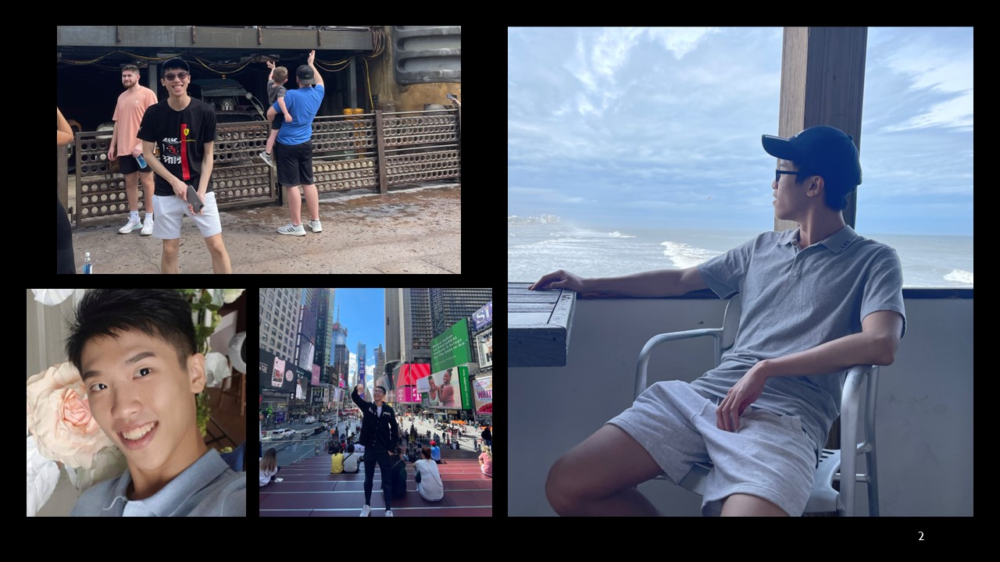

Influenced by the Taiwanese self-made tycoons and the fast-changing yet thriving high-tech industries, I have long wanted to study this field and devote myself to the world of technological innovation. I learned HTML, CSS, and different kinds of styling in my tech team which I thought these are skills that I will never use in my future. In the Taiwanese club, my upperclassman taught me how to edit notifications and information on the website. We made an activity recorder that our club could collect data. I spend around one and a half months making a selling window on the website for our tickets or merchandise which is certainly successful than selling tickets on campus. Although our club is small, we needed these specific skills to make the greatest notify to our Taiwanese students around me. I am ambitious to master more advanced skills and become a high-tech specialist; However, after taking some courses I started to wonder about my decision. Am I gifted to go for computer science? Am I suitable for these abstract concepts and languages? As I am wondering, I started to find myself a job and gain more experience on which I first dive into my dad’s company. Looking forward to engaging in business-related jobs, with my background knowledge and deep involving in data science, analyzing, and marketing issues, I started easy and hardworking in my first job. During my internship, I discovered that the most significant factor to consider in every single trade is “the measure” which through their experience they could find the perfect balance of benefit and risk. If I could create an efficient design to analyze the underlying patterns, which could indicate the future trend of the marketing world and the company. CS could make me involved in different careers such as employing technology for website design, algorithms, databases, and machine learning that could connect to any kind of career. After the internship, I am not only having a better relationship with my dad but also pluck up my courage and made me more determined on my path going for CS. Browsing over all the slides and worksheets in my previous CSE course, I understand all the java concepts again. I tried to get the international java OCP certificate to gain more confidence in my career which I successfully get the certificate. Although it seems to be like a small step, it certainly made me more determined on going this path.
